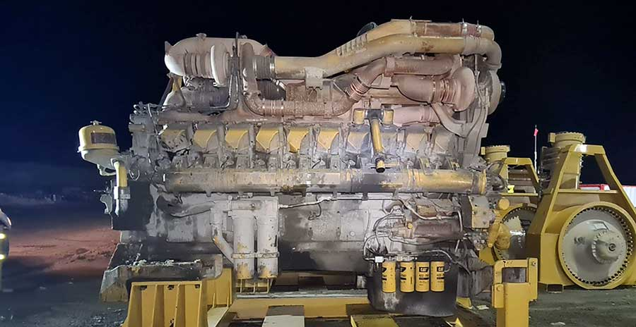
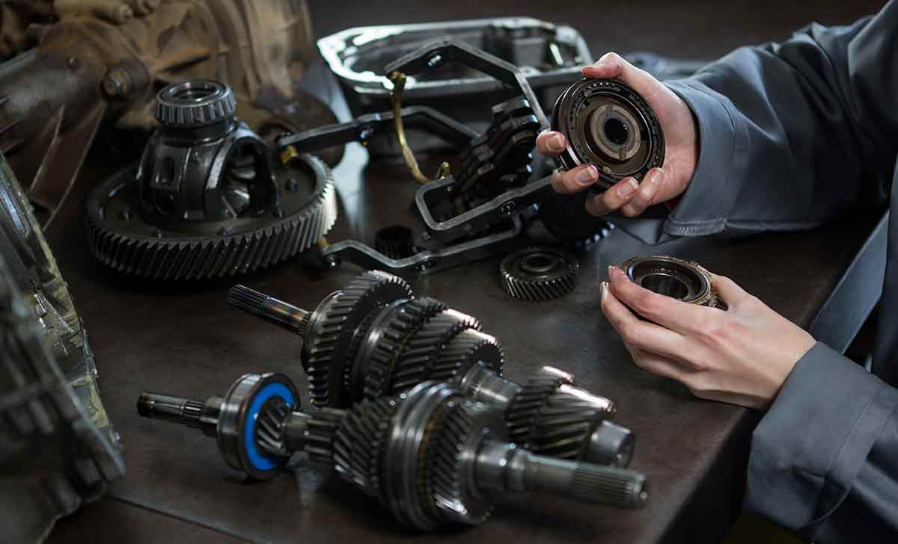

Servicios Ofrecidos
En Andes Heavy Tech SAC brindamos soluciones especializadas en mantenimiento, diagnóstico y monitoreo inteligente de maquinaria pesada para los sectores de minería, construcción y movimiento de tierras. Nuestro enfoque combina experiencia en ingeniería mecánica con tecnologías avanzadas como sensores IoT e inteligencia artificial para maximizar la disponibilidad operativa y reducir costos de mantenimiento.

🔧 Diagnóstico de Motores
Realizamos diagnósticos avanzados de motores diésel mediante escaneo electrónico, medición de parámetros y análisis técnico especializado.

⚙️ Mantenimiento Preventivo
Programas personalizados de inspección, lubricación, cambio de filtros y sustitución de componentes críticos para evitar fallas inesperadas.

🛢 Sistemas Hidráulicos
Diagnóstico y mantenimiento integral de bombas, cilindros, válvulas y líneas de presión en maquinaria pesada.
📡 Monitoreo IoT en Tiempo Real
Implementamos sensores inteligentes para recopilar datos operativos en tiempo real y visualizar el estado de cada equipo.
🤖 Inteligencia Artificial Predictiva
Algoritmos de IA que anticipan fallas mecánicas, detectan patrones anormales y generan alertas predictivas.
📊 Informes Técnicos y Analíticos
Informes detallados con KPIs, análisis de eficiencia y recomendaciones de mantenimiento para optimizar recursos.
🚜 Gestión Integral de Flotas
Monitoreo y control de flotas completas, análisis de productividad y mejora en la utilización de activos.

🔩 Análisis de Fallas y Confiabilidad
Metodologías de confiabilidad para identificar causas raíz de fallas y proponer soluciones correctivas.